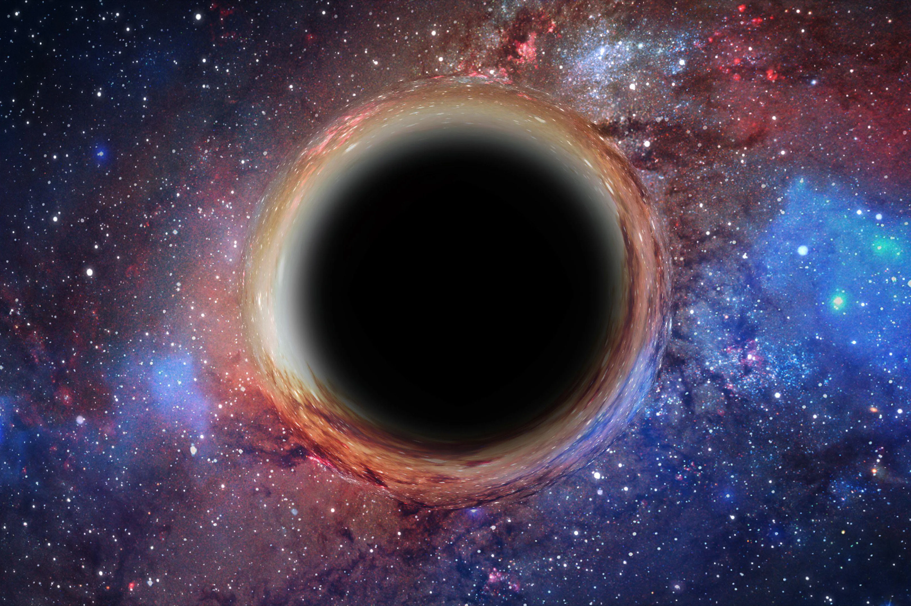
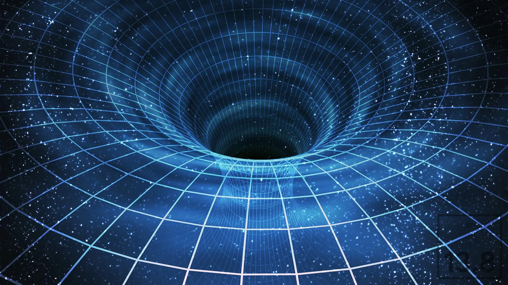
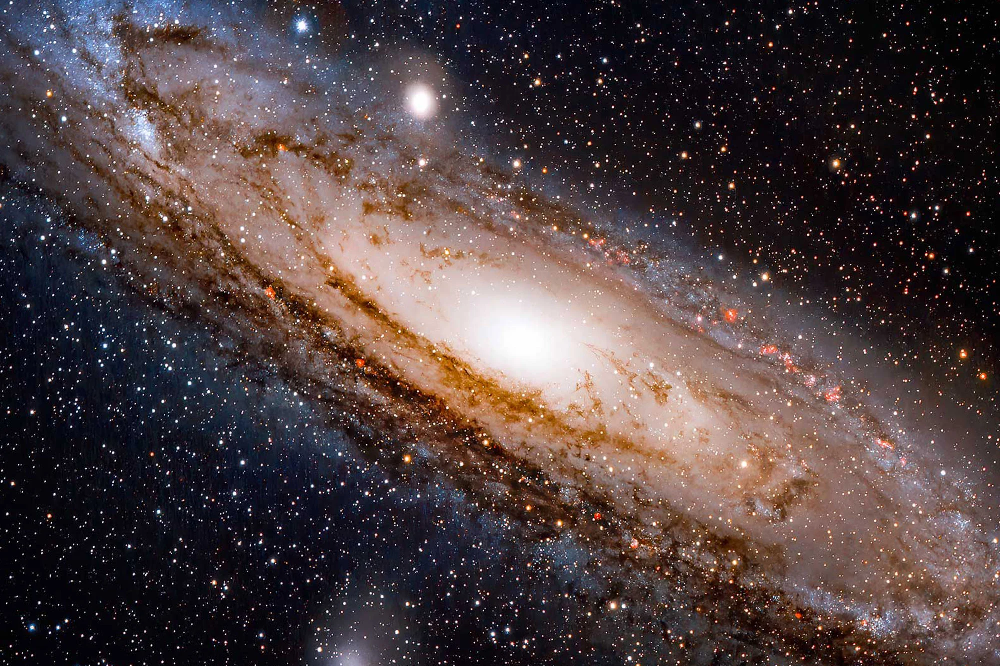

Когда‑то чёрные дыры считались чем‑то вроде сказки для физиков. Странной теорией, игрой воображения. Сегодня — это одна из самых реальных и загадочных частей Вселенной. Учёные не просто верят в их существование: они уже видели их — с помощью телескопов и детекторов гравитационных волн.
Но главный вопрос всё ещё открыт: что происходит внутри? Это финал всего сущего — или начало чего‑то нового? Разберёмся без сложных формул. Только проверенные факты, логика и немного фантазии — куда ж без неё, когда речь о чёрных дырах.
Что вообще такое чёрная дыра?
Проще всего представить себе сжатую до предела звезду. Когда массивная звезда (во много раз тяжелее Солнца) исчерпывает всё топливо, она сначала взрывается (это называется сверхновая), а потом её ядро коллапсирует — сжимается под собственной гравитацией.
Если массы достаточно, ничего не может остановить сжатие. Возникает чёрная дыра — объект с такой плотностью, что даже свет не может из неё вырваться.Вот это ключ: невозможность света покинуть чёрную дыру и делает её «чёрной». Есть чёткая граница — горизонт событий. Всё, что пересекает эту границу, уже не может вернуться. Даже информация. Во всяком случае, так считалось долгое время.
Это тупик?
С точки зрения классической физики — да. По Общей теории относительности Эйнштейна, чёрная дыра — это точка с бесконечной плотностью, называемая сингулярностью. Все законы физики внутри неё перестают работать в привычном виде. Пространство и время сливаются, и предсказать, что там внутри, мы не можем.
Для внешнего наблюдателя всё выглядит так, будто объект «застревает» у горизонта событий и никогда не падает внутрь. Но сам падающий — если бы он выжил — пролетает эту границу за доли секунды и больше никогда не вернётся. Всё звучит довольно мрачно. Но тут в игру вступает квантовая физика.
Или всё‑таки врата?
В 1970-х Стивен Хокинг доказал, что чёрные дыры — не такие уж вечные. Они могут испаряться за счёт квантовых флуктуаций на горизонте событий. Это явление получило название излучение Хокинга. Получается, что чёрные дыры теряют массу, а значит — и информацию?
1970
Излучение Хокинга
Вот тут разгорелся крупнейший научный спор последнего столетия: может ли информация исчезнуть бесследно? В квантовой физике — нет. А значит, должна быть какая‑то хитрая система, где информация сохраняется. И тут появляются следующие гипотезы.
Червоточины
Гипотетические тоннели, которые соединяют две разные точки пространства-времени. Возможно, чёрные дыры — это их входы? Теоретически это допускается уравнениями Эйнштейна, но доказательств пока нет.
Голографическая теория
Согласно ей, всё, что попадает в чёрную дыру, «записывается» на её поверхности. Информация сохраняется, просто в другой форме. Эта идея активно исследуется, особенно после работ Хуана Малдасены и Леонарда Сасскинда.
Огненные стены и хаос
Есть гипотезы, что при пересечении горизонта событий объект мгновенно сталкивается со «стеной» энергии, а не просто падает внутрь. Это противоречит многим теоретическим моделям, но показывает: мы пока не всё понимаем.
А может, мы уже это видели?
В 2019 году учёные проекта Event Horizon Telescope опубликовали первое в истории изображение тени от чёрной дыры. Она находилась в галактике M87, на расстоянии более 50 миллионов световых лет от Земли. Это была не фотография в привычном смысле, а скорее снимок «окрестностей» горизонта событий — но всё равно это был прорыв.
2019
Изображение тени от чёрной дыры
M87
Галактика, в которой она находилась